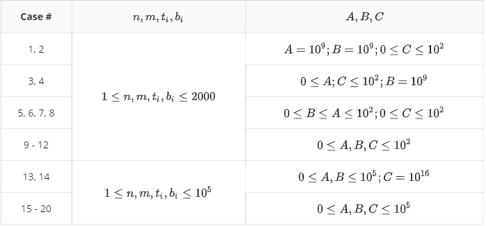

【样例 1 解释】
由于调整操作产生的不愉快度太大，所以在本例中最好的方案是不进行调整；全部的 $5$ 门课程中，最慢的在第 $3$ 天出成绩；
同学 $1$ 希望在第 $5$ 天或之前出成绩，所以不会产生不愉快度；
同学 $2$ 希望在第 $1$ 天或之前出成绩，产生的不愉快度为 $(3 - 1) \times 2 = 4$；
同学 $3$ 希望在第 $2$ 天或之前出成绩，产生的不愉快度为 $(3 - 2) \times 2 = 2$；
同学 $4$ 希望在第 $3$ 天或之前出成绩，所以不会产生不愉快度；
不愉快度之和为 $4 + 2 = 6$。
【数据规模与约定】

 Comet OJ
Comet OJ